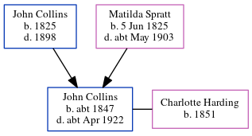

Ellen Jane Chidwick (née Collins) cNov 1863 - 1948
[ Home ] | [ Calendar ] | [ Surnames Index ] | [ Errors ] | [ Family History ]The child of John Collins (a shepherd) and Matilda Spratt, Ellen Collins, the first cousin three-times-removed on the father's side of Nigel Horne, was born in Minster, Thanet, Kent, England c. Nov 18631 and baptised there on 3 Jan 1864. She married Frederick Chidwick at St Anthony The Martyr, Alkham, Kent, England on 15 Oct 18814. On 2 Apr 1871, she was living at Cottage, Birchington, Kent5.
She died on 12 May 1948 at 86 Garden Road, Folkestone, Kent2,3 and was buried at Cheriton Road Cemetery, Folkestone on 15 May 1948 (a warm, sunny day).
Parents
- John was born in 1825
- Matilda was born on 5 Jun 1825
Citations
- England & Wales births 1837-2006 - Findmypast
- England & Wales Government Probate Death Index 1858-2019 - Findmypast
- England & Wales deaths 1837-2007 - Findmypast
- Kent, Canterbury Archdeaconry marriages 1538-1928 - Findmypast
- From her mother's census entry (was age 6 and the daughter of the head of the household)
Media
England & Wales births 1837-2006 - BMD/B/1863/4/AZ/000234/007
Kent, Canterbury Archdeaconry marriages 1538-1928 - GBPRS/CANT/M/97246088/2
England & Wales marriages 1837-2008 - BMD/M/1881/4/AZ/000067/174
England & Wales deaths 1837-2007 - BMD/D/1948/2/AZ/000147/041
England & Wales Government Probate Death Index 1858-2019 - GBOR/GOVPROBATE/C/1948-1948/00031409
Family Tree
Map
Generated by ged2site. Last updated on Jul 3, 2024
Known Issues
Burial date (15 May 1948) has no citations
1939 UK register information missing